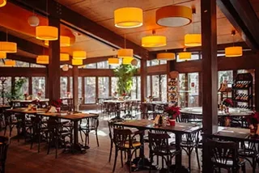
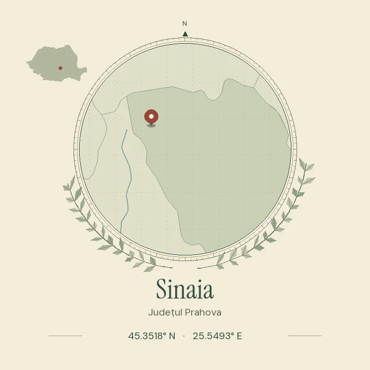
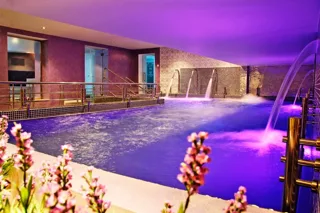
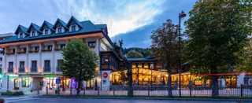

Locații de nuntă în Sinaia
- locații în director
- 8
- cu cazare în registrul SITUR
- 5
- medie ponderată Google
- 4,2 / 5
- evaluări Google
- 16.919
Cum alegi o locație în Sinaia
În Sinaia poți începe comparația cu KUIB Restaurant (restaurant), Vila de Argint (hotel), Restaurant Palace Sinaia (restaurant). Aceste proprietăți apar în primele poziții când luăm în calcul împreună nota și numărul de evaluări Google. Salvează adresele care vă interesează pentru a le așeza apoi alături în fișa de comparare a ofertelor.
Pentru partea de afară, avem o descriere a spațiului folosit la evenimente la KUIB Restaurant — Ceremonie în aer liber. La vizionare, cere schița pentru numărul vostru de persoane, inclusiv locul unde vor sta muzicienii și pe unde intră invitații.
Dacă vin rude de departe, Restaurant Palace Sinaia are o unitate de cazare asociată în registrul SITUR. Înregistrarea pentru Palace cuprinde 280 de locuri de dormit în 145 de spații de cazare. Întreabă câte camere pot fi păstrate pentru aceeași noapte înainte să trimiți invitaților detaliile de rezervare.
Dacă vrei să vezi două proprietăți în aceeași zi, poți continua de la KUIB Restaurant spre YAEL LUXURY APARTMENTS 4 din Bușteni. Punctele lor sunt la 1,6 km în linie dreaptă. Deschide traseul înainte să fixezi ora celei de-a doua vizite, mai ales dacă grupul se deplasează cu autocarul.
Locații pentru vizionare
Ordinea ține cont de nota Google și de numărul evaluărilor. Cum calculăm ordinea

Fotografie a locației · Sursa fotografiei Sinaia · Restaurant
KUIB Restaurant
KUIB Sinaia propune ceremonii în Parcul Piatra Șoimului, pe aproape 1.000 m², meniu personalizat cu degustare, bufet și candy bar de casă.
Strada Gârbovei 10C, 106100 Sinaia+40 735 189 107
Fotografie a locației · Sursa fotografiei Sinaia · Hotel
Vila de Argint
Pentru cazare la Vila de Argint, un oaspete s-a declarat mulțumit de cameră și de poziție, dar a întâmpinat o problemă la instalația din baie.
Aleea Peleșului. 2, Domeniul Regal Peleș, 106100 Sinaia+40 748 090 823
Fotografie a locației · Sursa fotografiei Sinaia · Restaurant
Restaurant Palace Sinaia
Un client care revenea la Restaurant Palace din Sinaia spune că într-o zi a găsit aici un eveniment în desfășurare și nu a știut imediat cui să se adreseze.
Strada Octavian Goga, 106100 Sinaia+40 743 928 872
Fotografie a locației · Sursa fotografiei Sinaia · Hotel
Hotel Anda
Hotel pe Bulevardul Carol I din Sinaia, cu restaurant de 160 de locuri în sală și pe terasă. Renovat, cu spa; ce să întrebi pentru petrecere.
Bulevardul Carol I 30, 106100 Sinaia+40 244 306 020
Hartă ilustrată Sinaia · Restaurant
Crama Rina Restaurant Tradițional Sinaia
Restaurant tradițional pe Bulevardul Carol I din Sinaia, cunoscut pentru papanași și porții mari. Plusuri, minusuri și întrebări pentru grup.
Bulevardul Carol I 8, 106100 Sinaia+40 754 228 896
Fotografie a locației · Sursa fotografiei Sinaia · Hotel
Hotel Carpathia
Hotel cunoscut în centrul Sinaiei, cu spa și centru de conferințe, dar recenziile din 2026 semnalează probleme serioase de igienă și mâncare.
Bulevardul Carol I 46, 106100 Sinaia+40 741 224 765
Fotografie a locației · Sursa fotografiei Sinaia · Hotel
Hotel Palace
Hotel Palace, Sinaia. Un client de la Palace din Sinaia a fost surprins că accesul la piscină necesita o plată suplimentară.
Strada Octavian Goga 4, 106100 Sinaia+40 758 749 117
Fotografie a locației · Sursa fotografiei Sinaia · Restaurant
Restaurant Bucegi
Restaurant Bucegi, Sinaia. Crap cu mămăligă, mujdei și vin alb: aceasta a fost comanda unui client de la Bucegi, în Sinaia.
Bulevardul Carol I 22, 106100 Sinaia+40 244 312 217
Întrebări despre locațiile din Sinaia
Unde pot dormi invitații în Sinaia?
În registrul de cazare SITUR găsim Restaurant Palace Sinaia (280 de locuri de cazare), Hotel Anda (62 de locuri de cazare), Hotel Carpathia (137 de locuri de cazare). Verifică ce camere sunt libere pentru noaptea evenimentului.
Ce spații sunt documentate pentru evenimente în aer liber în Sinaia?
KUIB Restaurant — Ceremonie în aer liber.
Care locație din Sinaia are cele mai multe evaluări Google?
Restaurant Bucegi are 4.372 de evaluări în profilul Google folosit la documentare. Evaluările acoperă și alte experiențe la proprietate, inclusiv vizitele fără eveniment.
Unde apare o intrare accesibilă în Sinaia?
Profilurile Google indică o intrare accesibilă la KUIB Restaurant, Restaurant Palace Sinaia, Crama Rina Restaurant Tradițional Sinaia. Pentru o cununie în exterior, cere detalii despre traseul dintre intrare și zona cu scaune.
Ce alte localități pot include într-o vizionare lângă Sinaia?
Cele mai apropiate adrese comparate pe hartă sunt în Bușteni, Poiana Țapului, Azuga. Găsești mai jos distanțele dintre proprietățile folosite pentru această comparație.
Vizionări în apropiere
- Bușteni · 19 locații. Între KUIB Restaurant și YAEL LUXURY APARTMENTS 4 sunt 1,6 km în linie dreaptă.
- Poiana Țapului · 1 locație. Între KUIB Restaurant și Complex Mona Caraiman sunt 2,2 km în linie dreaptă.
- Azuga · 1 locație. Între KUIB Restaurant și Cramele Prahova sunt 8,6 km în linie dreaptă.